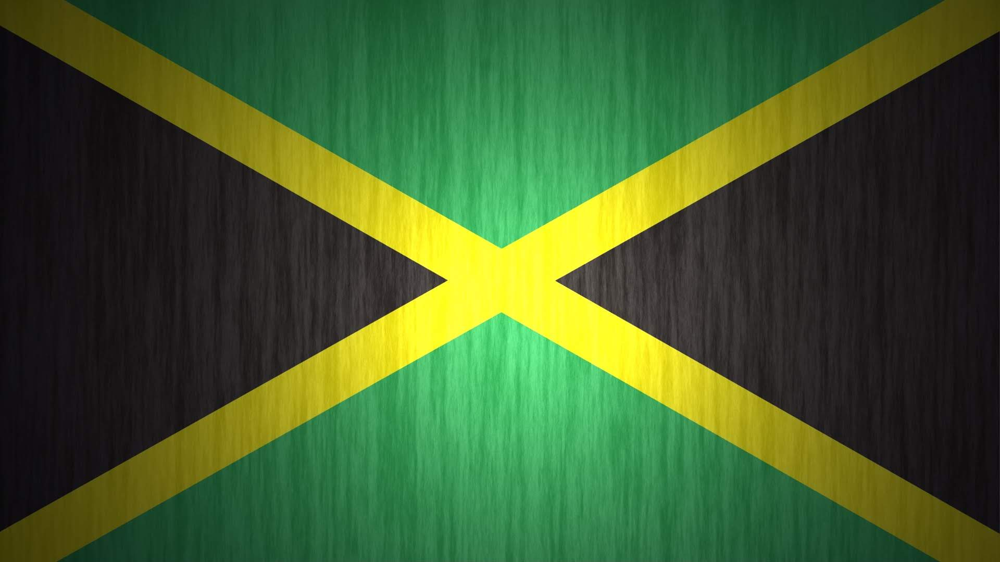
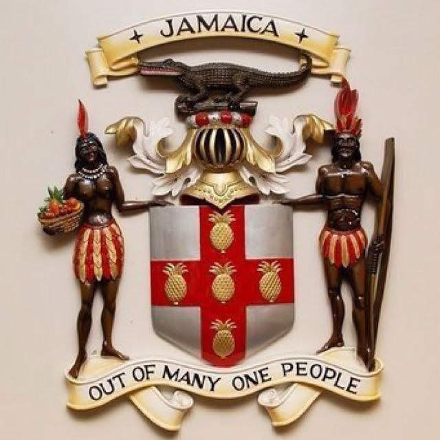
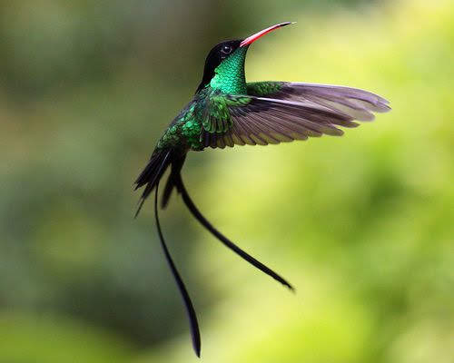
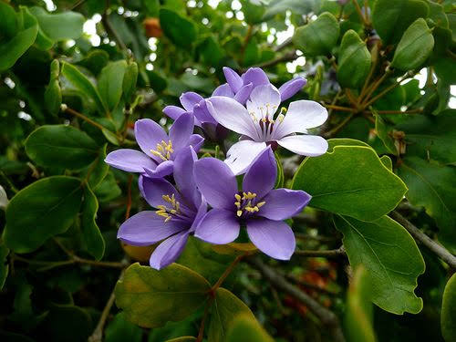
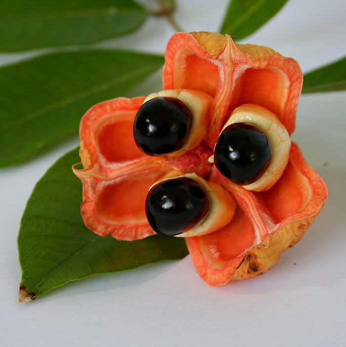
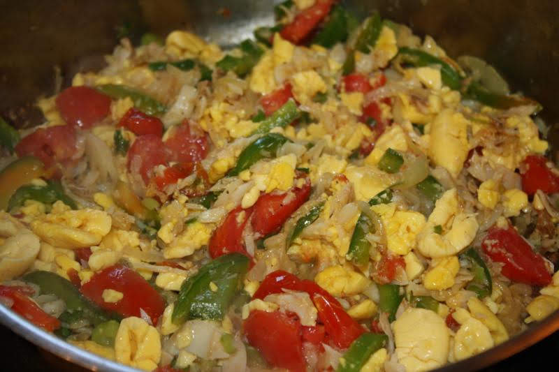

Panel

The flag of Jamaica was adopted on 6 August 1962, the original Jamaican Independence Day, the country having gained independence from the British-protected Federation of the West Indies. “The sun shineth, the land is green and the people are strong and creative” is the symbolism of the colours of the flag. Black depicts the strength and creativity of the people; Gold, the natural wealth and beauty of sunlight; and green, hope and agricultural resources.
"Our present is shaped by the tides of history". One cannot truly highlight the nation's beauty without acknowledging our heroes that struggled. They challenged the institutions of slavery, colonialism and dependency thereby changing the course of our history.

The Jamaican national motto is ‘Out of Many One People’, based on the population’s multi-racial roots. The motto is represented on the Coat of Arms, showing a male and female member of the Taino tribe standing on either side of a shield which bears a red cross with five golden pineapples. The crest shows a Jamaican crocodile mounted on the Royal Helmet of the British Monarchy and mantling.

The Doctor Bird (Trochilus polytmus) is the common name for the Swallow-Tail Hummingbird, the national bird of Jamaica. The feathers have a shimmering emerald green and black colour, a trait which is peculiar to this family of birds. The bird is able to fly backwards, this causes the feathers to make a humming sound when it flies

The Lignum Vitae, the Jamaica National Flower, was found here by Christopher Columbus. Its' name, when translated from Latin, means “wood of life” – probably adopted because of its medicinal qualities.
 
Ackee is the national fruit of Jamaica as well as a component of the national dish – ackee and saltfish. This delicacy is enjoyed by many at breakfast or as an entree. Along with saltfish (cod) used in our national dish, Jamaican ackee is a favourite for many when served with pork, salted mackerel, tinned mackerel, etc.

PLACES NEARBY
If you’re looking to have a peaceful day without leaving Kingston, Hope Botanical Gardens and Zoo is the place for you. The Hope Gardens is spread across 200 acres of land, which was just a small fraction of Major Richard Hope’s estate. It is currently the largest botanical gardens in the Caribbean.
The Papine area is also known for housing Jamiaca's most prestigous universities, University of Technology (UTech) and the University of the West Indies (UWI). As the prime institutions of tertiary education, they aim to develop and educate the minds of our budding and present labour force.
The name speaks for itself. Take a peak at one of our #1 tourist destinations, just a stone's throw away from Sovereign Center. Learn about the life and works of one of Jamaica's iconic stars, said to be the King of Reggae, Bob Marley.